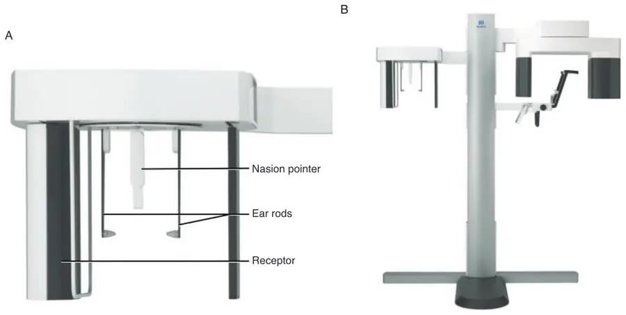
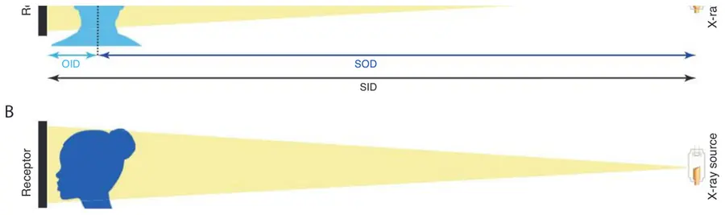

نسخه استخراجشده؛ ترجمه یا تأیید علمی انجام نشده است. وضعیت: captured
سفالومتری با یک تعریف سهبخشی شناخته میشود: رادیوگرافیهای سفالومتریک «با هندسهی پروجکشن استاندارد و بزرگنمایی معلوم ساخته میشوند، و تصویربرداری تکرارپذیر از ناحیهی کرانیوفاسیال را ممکن میکنند».

و تاریخچهاش کوتاه و دقیق است: این تکنیک «بهطور مستقل توسط B. Holly Broadbent و Herbert Hofrath در ۱۹۳۱ طراحی شد» تا «تکنیکهای آنتروپومتریک را برای ارزیابی رشد بیمار و تغییرات همراه با درمان ارتودنسی» به کار ببندد.
و نیرویی که آن را ساخت: «نیاز به ساخت رادیوگرافی جمجمه با کمترین بزرگنمایی و با تکرارپذیری بالا، تا مقایسههای زمانی ممکن شود.» پس از همان آغاز، هدف مقایسه در طول زمان بود، نه یک تصویر تکی.
سفالوستات — دستگاهی که همهچیز را ثابت نگه میدارد: «همهی رادیوگرافیهای سفالومتریک با سفالوستات ساخته میشوند، دستگاهی که رابطهای ثابت میان جمجمه، گیرنده، و پرتو ایکس برقرار نگه میدارد.»
و اجزایش:
و یک نکتهی مکانیکی مهم: «مجموعه میتواند در پایهاش بچرخد تا میلههای گوشی ۹۰ درجه بچرخند و بیمار برای پروجکشن خلفی-قدامی وضعیت بگیرد.» پس یک دستگاه، دو پروجکشن عمود بر هم.
و امروز: «سازندگان سفالوستاتها را به دستگاههای پانورامیک و CBCT متصل میکنند — این دستگاههای چندمنظوره از یک منبع پرتو واحد برای نیازهای پانورامیک، CBCT و سفالومتریک استفاده میکنند.»
اعداد هندسهی سفالومتریک را دقیق بدان:

و در دستگاههای دیجیتال امروزی، «این فاصلهها ثابتاند و کاربر نمیتواند آنها را تغییر دهد». پس بزرگنمایی یک ویژگی دستگاه است، نه یک انتخاب.
و اصل بزرگنمایی، که همهی طراحی از آن میآید: «ساختارهای نزدیکتر به گیرنده کمتر بزرگنمایی میشوند، در حالی که ساختارهای نزدیکتر به منبع بیشتر.»
و همین توضیح میدهد چرا سفالوگرام کرونال، خلفی-قدامی است: «با بهکارگیری همین اصل، نماهای سفالومتریک با جهت پرتو PA ساخته میشوند. این کار آناتومی صورت را نزدیکترین فاصله به گیرنده قرار میدهد و بزرگنمایی ساختارهای مورد نظر را کاهش میدهد.»
و در سفالوگرام لترال، بزرگنمایی محاسبهشده به کدام ساختارها اعمال میشود؟ «این بزرگنمایی میتواند به آناتومی خط وسط اعمال شود» — چون تنها همانجاست که فاصلهی جسم تا گیرنده معلوم و ثابت است.
و سه روش ثبت تصویر: فیلم یا PSP با یک اکسپوز کوتاه، دیجیتال تکشلیک: آشکارساز سطح بزرگ از سینتیلاتور یدید سزیم یا اکسیسولفید گادولینیوم که نور مرئی را از راه فیبر نوری به آشکارسازهای CMOS میرساند؛ حدود ۱ ثانیه، پس احتمال حرکت بیمار کم است، دیجیتال اسکنی: آرایهی عمودی باریک CMOS به پهنای ۴ تا ۷ میلیمتر که هماهنگ با پرتو و کولیماتورها حرکت میکند؛ حدود ۴ تا ۲۰ ثانیه، و این زمان بیشتر در عمل محدودیتی نبوده است. اصول آنالیز در هر سه یکسان است. برای نمایش پروفایل بافت نرم، در فیلم، PSP و دیجیتال غیراسکنی یک فیلتر گوهای کنار منبع شدت پرتو را در قدام کم میکند، و در روش اسکنی سرعت اسکن در قدام بیشتر میشود.